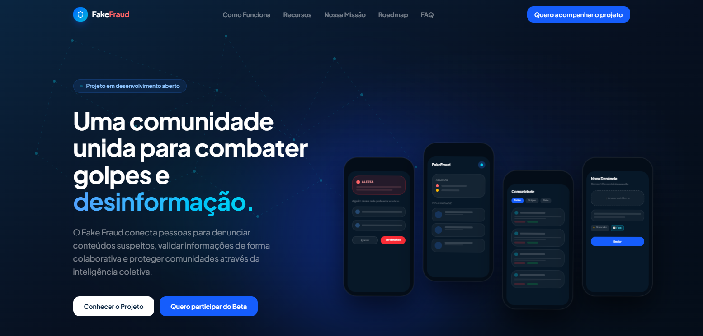
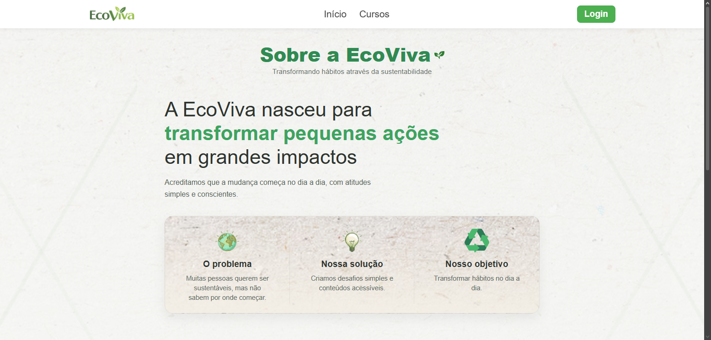
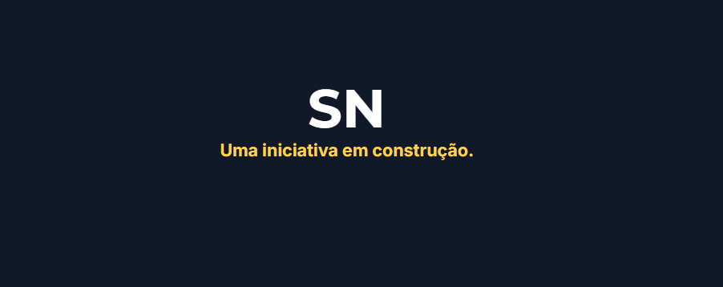
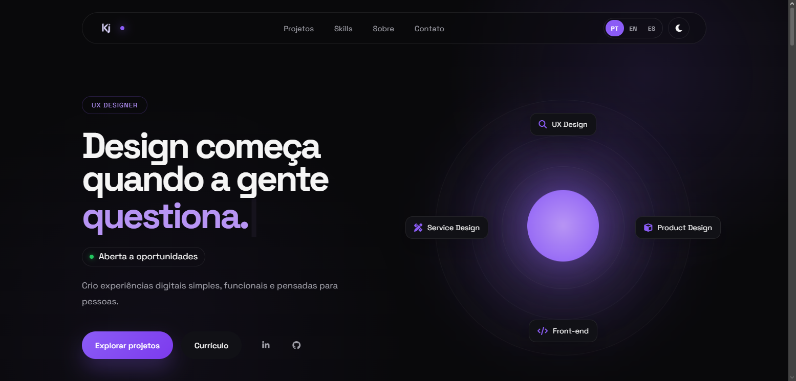

 Fake Fraud Product Design Plataforma colaborativa para incentivar a verificação de informações antes do compartilhamento, unindo pesquisa com usuários, arquitetura da informação, prototipação e uma interface intuitiva. Resultado: MVP conceitual navegável no Figma, com 7 fluxos e pesquisa com 12 participantes. UX Research UI Design Arquitetura da Informação Ver Case
 EcoViva UX/UI Design Projeto de UX/UI voltado à conscientização ambiental, com foco em criar uma experiência simples e motivadora para incentivar hábitos mais sustentáveis no dia a dia. UX Interface Protótipo Ver projeto
 SN - Iniciativa Esportiva Service Design Iniciativa esportiva em fase de estruturação, que tem como proposta oferecer treinamentos gratuitos de futebol para jovens da rede pública. UX Service Design Design Thinking Ver projeto
 Portfólio Front-end Portfólio desenvolvido do zero para apresentar minha trajetória, projetos e processo de design, combinando identidade visual, microinterações e desenvolvimento front-end. HTML CSS JavaScript Ver projeto
Learning Journal Estudos Repositório que documenta minha jornada de aprendizado em tecnologia e design, organizando conhecimentos, referências e práticas desenvolvidas durante os estudos. GitHub Markdown Estudos Ver projeto
01 Descobrir Entendo o contexto, os objetivos do negócio e as necessidades das pessoas antes de pensar em soluções.
02 Pesquisar Organizo informações, identifico oportunidades e valido hipóteses através de pesquisa e análise.